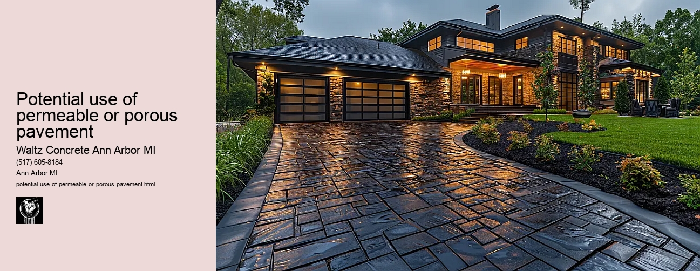

News
Concrete Driveway Installation Ann Arbor Mi
Concrete Driveway Installation Ann Arbor Mi
Choosing the right contractor for installation
Cost of concrete driveway installation in Ann Arbor
Permit requirements for driveway installation in Ann Arbor
The process and timeline of concrete driveway installation
Different types of concrete used in driveways
Maintenance and Repair of Concrete Driveways in Ann Arbor Mi
Maintenance and Repair of Concrete Driveways in Ann Arbor Mi
Preventive maintenance tips for durability
Common causes for concrete driveway damage
Professional companies offering repair services in Ann Arbor
Doityourself versus professional repairs
Costs associated with repairing a concrete driveway
Designs and Styles of Concrete Driveways in Ann Arbor Mi
Designs and Styles of Concrete Driveways in Ann Arbor Mi
Popular design trends for driveways
Considering climate factors when choosing a design or style
Unique customizations available for concrete driveways
Influence of home architecture on driveway design
Stamped stained and decorative options
Environmental Impact of Concrete Driveways in Ann Arbor Mi
Environmental Impact of Concrete Driveways in Ann Arbor Mi
Carbon footprint associated with concrete production
Use of sustainable materials in concrete driveways
Drainage considerations to reduce environmental impact
Local regulations regarding environmentally friendly driveways
Potential use of permeable or porous pavement
Alternatives to Concrete Driveways in Ann Arbor Mi
Alternatives to Concrete Driveways in Ann Arbor Mi
Asphalt driveways and their proscons
Paver stone driveways and their benefitsdrawbacks
Gravel or crushed stone as an alternative option
Comparing costs between different driveway materials
Resinbound surfaces as emerging technology
About Us
Contact Us

Potential use of permeable or porous pavement
Potential use of permeable or porous pavement
Title: Potential Use of Permeable or Porous Pavement
The increasing global concern about environmental sustainability has led to a surge in innovative practices, especially in urban design and architecture. One such innovation is the use of permeable or porous pavements. They have shown great promise for mitigating various environmental issues associated with traditional pavement systems, particularly those related to stormwater management.
Permeable or porous pavements are engineered surfaces that can absorb stormwater, reducing runoff by allowing water to seep through their surface into underlying layers of soil and gravel. Unlike conventional asphalt or concrete surfaces which cause rainwater to pool on top or run off into drains, the porous nature of these pavements allows water to infiltrate the ground, closely mimicking natural processes.
A significant benefit of permeable pavement is its potential contribution towards effective stormwater management. When it rains heavily on non-porous streets, water rushes off the hard surfaces carrying pollutants like oil and trash into our waterways. However, with permeable pavement systems in place, this runoff is dramatically reduced as water percolates through the pavement surface and naturally gets filtered before entering groundwater sources.
Moreover, porous pavements help recharge aquifers by re-routing rainwater back into underground repositories rather than diverting it away via sewer systems. This process not only aids in preserving our freshwater resources but also reduces instances of flooding and soil erosion - common problems associated with traditional impervious surfaces.
Furthermore, due to their ability to diffuse heat more effectively compared to conventional concrete or asphalt roads, permeable pavements could play a vital role in mitigating urban heat island effects an issue that most densely populated cities grapple with today.
Despite these promising advantages, there are also challenges attached to implementing permeable pavements widely. They require regular maintenance needs like vacuum sweeping to prevent clogging from sediment build-up; they may not be suitable for areas with heavy vehicular traffic due to potential surface deformation, and the higher initial cost compared to traditional pavements cannot be ignored.
As research progresses and we continue to understand how best to overcome these challenges, its clear that permeable or porous pavements hold a great deal of promise. They represent an innovative solution that addresses several environmental concerns while providing functional value in urbanized areas.
In conclusion, the potential use of permeable or porous pavement could offer significant benefits for sustainable urban planning. While there may be hurdles along the way, this eco-friendly alternative could serve as an effective remedy to many environmental issues associated with conventional pavement systems, thus making cities more resilient and sustainable in the face of climate change.
Local regulations regarding environmentally friendly driveways
Potential use of permeable or porous pavement
Frequently Asked Questions
What are the benefits of using permeable or porous pavement for a concrete driveway in Ann Arbor, Mi?
The primary benefits include improved stormwater management by allowing water to drain through the surface and into the ground below, reducing runoff and erosion. Additionally, it can recharge groundwater supplies, help maintain local temperature balance, and provide a durable and long-lasting driveway surface.
How does porous pavement handle heavy snowfall typical in Ann Arbor during winters?
Due to its permeability, snowmelt can seep into the pavement rather than pooling on top or refreezing into ice. This can reduce hazardous icy conditions on the driveway. However, special care may be needed when plowing not to damage the porous structure.
Are there any particular maintenance requirements for porous concrete driveways?
While generally low-maintenance, porous pavements may require occasional vacuuming or power washing to remove debris from pores that could obstruct water infiltration. Additionally, sealants should not be used as they can block pores and impact permeability.
Potential use of permeable or porous pavement